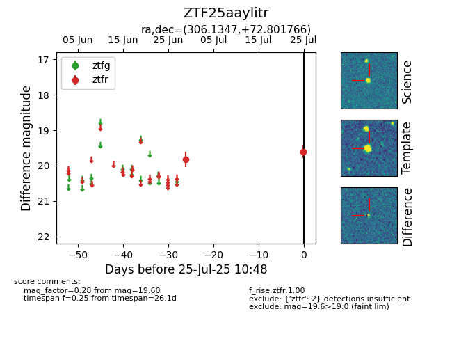

Target ZTF25aaylitr at 2025-07-25 10:48, see:
FINK: fink-portal.org/ZTF25aaylitr
Lasair: lasair-ztf.lsst.ac.uk/objects/ZTF25aaylitr
ALeRCE: alerce.online/object/ZTF25aaylitr
alt names
ZTF25aaylitr (ztf,fink)
coordinates:
equatorial (ra, dec) = (306.1347,+72.80177)
galactic (l, b) = (106.1993,+19.36666)
photometry
last ztfr=19.60
2 ztfr detections
